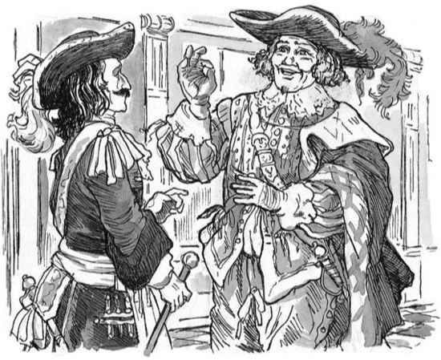
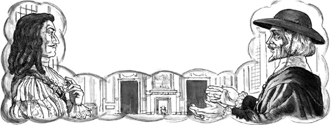

3
Louvre, Paris
Listen to Part 1:
D’Artagnan là đội trưởng của nhóm Musketeer của nhà vua, những người bảo vệ nhà vua. Họ đi khắp nơi cùng nhà vua Louis.
Vào một buổi sáng, D’Artagnan gặp người bạn của mình là Porthos tại Louvre, cung điện của nhà vua ở Paris. Porthos rất phấn khích.
Anh ta nói: “Tuần tới, tôi sẽ đến Vaux, D’Artagnan ơi.” “Ngài Fouquet, Bộ trưởng Tài chính, có một ngôi nhà mới tuyệt đẹp ở Vaux. Ngài sẽ tổ chức một bữa tiệc tuyệt vời cho nhà vua tại đó. Ngài đã mời tôi đến dự tiệc. Bạn sẽ đến đó chứ, bạn của tôi?”

D’Artagnan trả lời: “Có.” “Tôi và đội Musketeer của tôi sẽ đến đó cùng nhà vua.”
Nửa giờ sau, D’Artagnan và Porthos gặp thêm một người bạn khác ở Louvre. Đó là Aramis, Giám mục Vannes. D’Artagnan ngạc nhiên.
Anh ta nói: “Aramis!” “Sao ngươi lại vào cung?”
Aramis trả lời: “Ta muốn nói chuyện với ngài Fouquet.” “Nhưng hôm nay ngài ấy rất bận. Ngài ấy đã mời ta đến dự tiệc ở Vaux. Ta sẽ nói chuyện với ngài ấy ở đó.”

Buổi sáng sớm hôm đó, Aramis đã nói chuyện với ngài Fouquet. Bộ trưởng Tài chính của nhà vua không vui vẻ gì cho lắm.
Listen to Part 2:
Aramis nói: “Bạn của tôi ơi.” “Sao ông buồn thế? Ai cũng nói về bữa tiệc của ông ở Vaux. Ông sẽ khiến nhà vua rất vui đấy.”
Fouquet nói: “Đúng vậy.” “Bữa tiệc sẽ tuyệt lắm. Nhưng tôi đã tiêu hết tiền vào ngôi nhà ở Vaux này rồi. Tôi phải có thêm tiền ngay. Ông đã hứa với tôi rồi mà, Aramis - hứa rằng sẽ cho tôi hàng triệu franc cơ.”

Aramis trả lời: “Và ông sẽ sớm có chúng thôi, bạn ơi.” “Ông sẽ có tiền sau khi nhà vua đến thăm Vaux. Nhưng giờ này, ông phải làm một việc cho tôi. Tôi cần một lệnh bằng văn bản của ông. Lệnh này sẽ thả một tù nhân ra khỏi Bastille - một chàng trai trẻ. Tên anh ta là Seldon. Nhà vua đã tống giam anh ta trong mười năm.”
Fouquet hỏi: “Hắn phạm tội gì?”
Aramis nói: “Hắn đã viết những lời không hay ho về các giám mục ở Pháp.” “Nhưng chúng tôi đã tha thứ cho hắn rồi.”
Fouquet hỏi: “Hắn không phạm thêm tội nào khác à?”
Aramis trả lời: “Hắn không phạm thêm tội nào khác.”
Fouquet đến bàn làm việc và viết lệnh trên một tờ giấy. Ông ta đưa cho Aramis.
Fouquet nói: “Tờ lệnh này sẽ thả Seldon ra.”
Listen to Part 3:
Vị Giám mục mỉm cười. Ông ấy nói: “Cảm ơn ông, bạn của tôi.”
Mục lục
- Trang bìa
- Trang bản quyền
- Mục lục
- Ghi chú về tác giả
- Ghi chú về tác phẩm này
- 1 Pháo đài Bastille, Paris
- 2 Người tù
- 3 Cung điện Louvre, Paris
- 4 'Con sẽ là một vị vua vĩ đại'
- 5 Gian dinh tráng lệ tại Vaux
- 6 'Tôi là vua của nước Pháp!'
- 7 Louis và Philippe
- 8 Fouquet biết được bí mật
- 9 Âm mưu của Giám mục
- 10 Anh em nhà vua
- 11 Những cuộc họp tại Nantes
- 12 Belle-Isle
- 13 Vượt ngục
- 14 Người lính ngự lâm cuối cùng